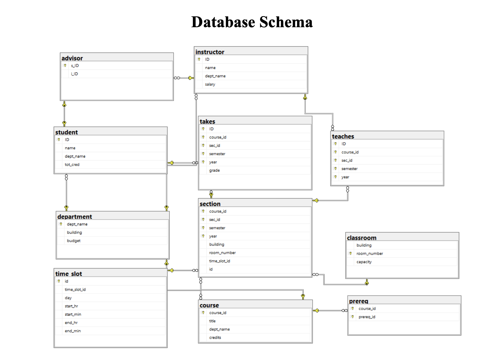
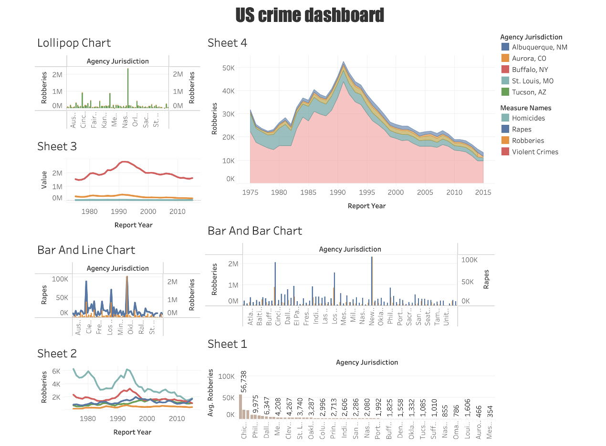

University Database Management Project (SQL) : This project demonstrates the design and implementation of a relational database system for a university. Using SQL, I created normalized tables to manage student records, course enrollments, instructors, and grades. The project focuses on applying data integrity constraints, foreign key relationships, and query operations to simulate real-world academic workflows like admissions, grading, and departmental data tracking.

This Power BI dashboard analyzes retail sales performance across product categories, regions, and time. It highlights top-selling items, monthly sales trends, and KPIs such as highest quantity and discount. Visuals like bar charts, pie charts, and line graphs were used for clear insights. The report helps in identifying key drivers of sales and regional contributions to business growth.It serves as a quick business intelligence tool for stakeholders to make data-driven decisions. This project strengthened my skills in Power BI, DAX, and storytelling with interactive visuals.

Project Overview : This project performs exploratory data analysis (EDA) on the famous Titanic dataset to uncover insights about passenger survival patterns. Implemented using Python in a Jupyter Notebook, this project demonstrates basic data cleaning, visualization, and statistical analysis for beginners in data science.

Vrinda Store Annual Report 2022 Dashboard : This Power BI dashboard presents a comprehensive analysis of Vrinda Store’s performance in 2022. It highlights key business insights such as monthly sales trends, top-performing states, order channel distribution, and customer demographics by age and gender. Visuals like pie charts and bar graphs were used to reveal patterns in delivery status and product category performance. The report also emphasizes that women contributed 64% of total sales, and Amazon was the leading sales channel. This project demonstrates my ability to turn raw data into meaningful, actionable insights using Power BI.

US Crime Dashboard (Tableau) : This beginner-friendly dashboard visualizes crime trends across major US cities using Tableau. It highlights patterns in violent crimes such as homicides, rapes, and robberies over time and by jurisdiction. The dashboard uses various visualizations—line charts, lollipop charts, bar charts, and area plots—to make complex data easy to interpret. This project helped me strengthen my skills in Tableau and build a foundation in data storytelling with real-world datasets.